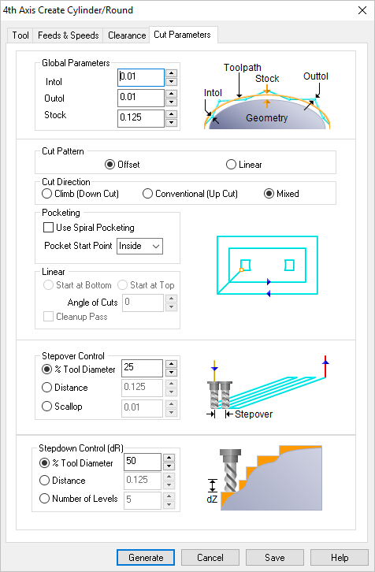
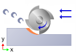

The following Cut Parameters tab allows you to define the cut parameters for the current Round operation. You can set Global Parameters, Cut Pattern, Cut Direction, Stepover and the Stepdown parameters via this tab of the operation dialog. The Global Parameters section allows you to set the tolerance value to be used in machining. A uniform thickness or stock that needs to be left around the part can also be specified here. Refer to each option below.
 Dialog Box: 2½ Axis Pocketing |
Intol The global Intol value refers to the inward tolerance. This is the maximum thickness of material that can be removed from the Stock layer. Intol Outtol The global Intol value refers to the inward tolerance. This is the maximum thickness of material that can be removed from the Stock layer. Intol
Stock This is the thickness of the layer that will remain on top of the part after the toolpath is complete. Roughing operations generally leave a thin layer of stock. For finishing operations this value is zero.  Stock |

Select Offset and the tool will traverse in successive uniform offsets of the part shape starting from the Inside or Outside depending on the Start Point selection.
Select Linear and the tool will traverse in a Linear cut beginning at the Top or Bottom depending on the Start Point selection. Linear |

Select Climb (Down Cut) and the tool will be maintained in a downward motion into the stock. ") Climb (Down Cut) Select Conventional (Up Cut) and the direction of the tool will be maintained in an upward motion out of the stock.  Conventional (Up Cut) Select Mixed and the direction of cutting is alternated between each parallel plane. This is a mixture of both Climb and Conventional cutting of the stock.  Mixed
|
 One of the basic concepts to understand in any milling operation is
One of the basic concepts to understand in any milling operation is Select Offset Spiral and the tool will traverse in a spiral pattern with successive offsets of the part shape starting from the Inside or Outside depending on the Start Point selection.  Offset Spiral Choose where you want the cut pattern to begin, Inside the pattern or Outside.
|


Select this option if you want the starting locating for the cut pattern to begin at the bottom of the cut pattern (i.e., min Y).  Start at Bottom Specify the Angle of Cuts (0-360) measured from the X Axis. This additional parameter is available for some operations when a linear cut pattern is used.
Automatically detect corners that the tool could not reach between cut level and add a toolpath based on the uncut area detected. Either Linear or Offset cut patterns are used in these areas.
|


Stepover Control Specify the stepover distance for the current operation as a percentage of the active tool diameter (% Tool Dia) and then enter the percentage value.  % Tool Dia. Specify the stepover for the current operation as an exact Distance and then enter the distance value in the field provided. Distance For Stepover Control, select Scallop and enter the desired scallop height in the field provided. This will automatically determine the Stepover spacing between cuts. Scallop Stepover |
Stepdown Control (dZ) This allows you to set the Stepdown Control (Dz) distance for the current operation as a percentage of the active tool selected for the operation. Select % Tool Diameter and then enter the percentage value in the field provided. Stepdown % Tool Diameter Distance allows you to set the Stepdown Control (Dz) for the current operation as an absolute distance value. Select Distance and then enter the stepdown distance to use. Number of Levels allows you to set the Stepdown Control (dZ) distance for the current operation by entering the Number of Levels you want to use to remove the Stock. The distance between cut levels will be calculated for you. |